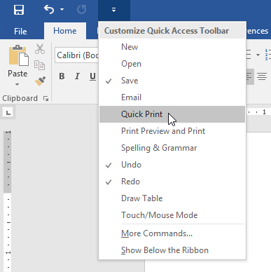
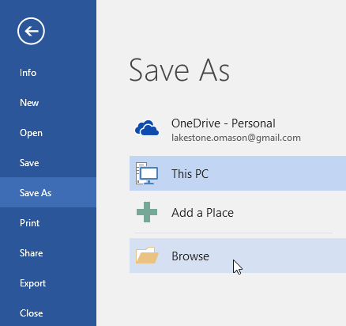
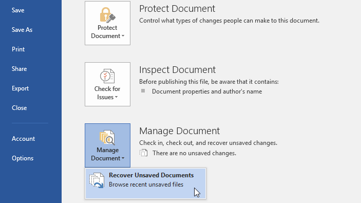
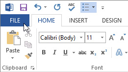

Dasar-dasar Word
Ketika Anda membuka Word untuk pertama kalinya, Start Screen akan muncul. Dari sini, Anda dapat membuat buku kerja/ workbook baru, memilih template, dan mengakses buku kerja yang baru saja diedit. Dari Layar Start, cari dan pilih Blank dokumen untuk mengakses antarmuka Word.

Pelajari lebih lanjut tentang antarmuka Word :
- Quick Access Toolbar: Quick Access Toolbar memungkinkan Anda mengakses perintah-perintah umum, tidak peduli tab mana yang sedang dipilih. Secara default, di dalamnya termasuk Save, Undo, dan perintah Repeat.
- Ribbon: Ribbon berisi semua perintah yang Anda perlukan dalam melakukan tugas umum di Word. Ribbon memiliki banyak tab, masing-masing tab dengan beberapa kelompok perintah.
- Perintah Grup: Setiap kelompok/group berisi serangkaian perintah yang berbeda. Cukup klik perintah apapun untuk menerapkannya. Beberapa kelompok juga memiliki panah di sudut kanan bawah, yang dapat Anda klik untuk melihat perintah yang lebih lanjut.
- Panel Dokumen: Ini adalah tempat di mana Anda akan mengetik dan mengedit teks dalam dokumen.
- Ruller: Ruller terletak di bagian atas dan di sebelah kiri dokumen Anda. Akan mempermudah untuk menyelaraskan dan menyesuaikan jarak.
- Tell Me: Bar Tell Me memungkinkan Anda untuk mencari sebuah perintah, sangat membantu jika Anda tidak ingat di mana menemukan sebuah perintah tertentu.
- Microsoft Account: Dari sini, Anda dapat mengakses informasi Akun Microsoft Anda, melihat profil, dan beralih Akun.
- Scroll Bar: Klik dan tarik scroll bar vertikal untuk bergerak ke atas dan ke bawah melalui halaman dokumen Anda.
- Page dan Word Count: Dari sini, Anda dapat dengan cepat melihat jumlah kata dan halaman dalam dokumen Anda.
- Document Views: Ada tiga cara untuk melihat dokumen. Read Mode menampilkan dokumen Anda dalam modus layar penuh. Print Layout, dipilih secara default dan akan menampilkan dokumen sama seperti halaman yang dicetak. Web Layout menunjukkan bagaimana dokumen Anda akan terlihat sebagai halaman web.
- Zoom Control: Klik dan tarik slider untuk menggunakan zoom control Angka yang terletak pada kanan slider menunjukan persentase pembesaran.
Bekerja dengan lingkungan Word
Seperti versi terbaru lainnya, Word 2016 tetap menggunakan fitur seperti Ribbon dan Quick Access Toolbar, di mana Anda akan menemukan perintah untuk melakukan tugas-tugas umum di Word, serta tampilan Backstage.
Word menggunakan sistem tab Ribbon, bukan menu tradisional. Ribbon berisi beberapa tab, yang dapat Anda temukan di dekat bagian atas jendela Word.

Setiap tab berisi beberapa kelompok perintah yang terkait. Misalnya, kelompok Font pada tab Home berisi perintah untuk memformat teks dalam dokumen Anda.

Beberapa kelompok juga memiliki panah kecil di sudut kanan bawah yang dapat Anda klik untuk pilihan yang lebih banyak.

Menampilkan dan menyembunyikan Ribbon
Jika Anda merasa bahwa Ribbon mengambil terlalu banyak ruang layar, Anda dapat menyembunyikannya. Untuk melakukan ini, klik panah Ribbon Display Option di sudut kanan atas Ribbon, lalu pilih opsi yang diinginkan dari menu drop-down:

- Auto-hide Ribbon: Auto-hide menampilkan dokumen Anda dalam modus layar penuh dan akan menyembunyikan Ribbon dari pandangan. Untuk menampilkan kembali Ribbon, klik perintah Expand Ribbon di bagian atas layar.
- Show Tabs: Opsi ini akan menyembunyikan semua kelompok perintah ketika mereka sedang tidak digunakan, namun tab akan tetap terlihat. Untuk menampilkan kembali Ribbon, cukup klik tab.
- Show Tab dan Commands: Opsi ini akan memaksimalkan Ribbon. Semua tab dan perintah akan terlihat. Opsi ini dipilih secara default ketika Anda membuka Word untuk pertama kalinya.
Menyesuaikan Ribbon
Anda dapat menyesuaikan Ribbon dengan membuat tab Anda sendiri dengan perintah yang ingin Anda gunakan. Perintah selalu disimpan dalam grup, dan Anda dapat membuat grup sebanyak yang Anda inginkan agar tab tetap teratur. Jika mau, Anda bahkan dapat menambahkan perintah ke salah satu tab default, selama Anda membuat grup khusus di tab tersebut.
Untuk menyesuaikan Ribbon:
-
Klik kanan Ribbon, lalu pilih Customize the Ribbon... dari menu drop-down.

-
The Word Options kotak dialog akan muncul. Cari dan pilih New Tab.

-
Pastikan New Group dipilih, pilih command, lalu klik Add. Anda juga dapat menyeret perintah langsung ke dalam grup.
Setelah selesai menambahkan perintah, klik OK. Perintah akan ditambahkan ke Ribbon.
-
Jika Anda tidak melihat perintah yang diinginkan, klik kotak drop-down Choose commands from: dan pilih All Commands.
Jika Anda mengalami kesulitan menemukan perintah yang Anda inginkan, fitur Tell Me dapat membantu. Ia bekerja seperti sebuah kotak pencarian biasa : Ketik apa yang Anda ingin cari, dan daftar pilihan akan muncul. Anda kemudian dapat menggunakan perintah secara langsung dari menu tanpa harus menemukannya di Ribbon.

Terletak tepat di atas Ribbon, Quick Access Toolbar memungkinkan Anda mengakses perintah umum dengan tidak mempedulikan tab mana yang dipilih. Secara default, itu menampilkan perintah Save, Undo, dan Redo, tetapi Anda dapat menambahkan perintah lain tergantung pada kebutuhan Anda.
Menambahkan perintah pada Quick Access Toolbar:
-
Klik panah drop-down di sebelah kanan Quick Access Toolbar.

-
Pilih perintah yang ingin Anda tambahkan dari menu.

-
Perintah akan ditambahkan pada Quick Access Toolbar.

Ruller terletak di bagian atas dan di sebelah kiri dokumen Anda. Ruller akan mempermudah menyesuaikan dokumen Anda dengan presisi. Jika Anda ingin, Anda dapat menyembunyikan Ruler untuk memperbasar ruang layar.
Menampilkan atau menyembunyikan Ruler:
Klik tab View.

Klik kotak centang di sebelah Ruler untuk menampilkan atau menyembunyikan Ruler.

Tampilan Backstage menampilkan pilihan untuk menyimpan, membuka file, mencetak, dan berbagi dokumen Anda. Untuk mengakses tampilan Backstage, klik tab File pada Ribbon.


Pelajari lebih lanjut tentang menggunakan tampilan Backstage.
- Return to Word: Anda dapat menggunakan panah untuk menutup tampilan Backstage dan kembali ke Word.
- Info: Panel Info akan muncul setiap kali Anda mengakses tampilan Backstage. Ini berisi informasi tentang dokumen saat ini. Anda juga dapat memeriksa dokumen untuk menghapus informasi pribadi dan melindunginya, mencegah orang lain membuat perubahan.
- New: Dari sini, Anda dapat membuat dokumen kosong yang baru, atau Anda dapat memilih dari pilihan template.
- Open: Dari sini, Anda dapat membuka dokumen yang disimpan pada komputer atau OneDrive Anda.
- Save dan Save As: Anda akan menggunakan Save dan Save As untuk menyimpan dokumen ke komputer atau OneDrive Anda.
- Print: Dari panel Print, Anda dapat mengubah pengaturan pencetakan dan mencetak buku kerja Anda. Anda juga dapat melihat preview dari dokumen Anda.
- Share: Dari sini, Anda dapat mengundang orang untuk melihat dan berkolaborasi pada dokumen Anda.
- Ekspor: Dari sini, Anda dapat mengekspor dokumen Anda menjadi file dengan format lain, seperti PDF / XPS.
- Close: Klik di sini untuk menutup buku kerja yang saat ini terbuka.
- Account: Dari panel Account, Anda dapat mengakses informasi Akun Microsoft Anda, mengubah tema dan latar belakang, dan keluar dari Akun Anda.
- Options: Di sini, Anda dapat mengubah berbagai pilihan Word. Misalnya, Anda dapat mengontrol pengaturan ejaan dan pemeriksaan tata bahasa, pengaturan AutoRecover, dan preferensi bahasa.
Word memiliki berbagai pilihan tampilan yang dapat mengubah bagaimana dokumen Anda akan ditampilkan. Anda dapat memilih melihat dokumen Anda pada mode baca/Read View, Print Layout, atau Web Layout. Tampilan ini dapat berguna untuk berbagai tugas, terutama jika Anda berencana untuk mencetak dokumen. Anda juga dapat memperbesar dan memperkecil agar dokumen Anda lebih mudah dibaca.
Beralih di antara tampilan File yang berbeda itu mudah. Cukup cari dan pilih perintah tampilan File yang diinginkan di sudut kanan bawah jendela Word.
-
Read Mode : Tampilan ini akan membuka dokumen pada layar penuh. Tampilan ini sangat berguna untuk membaca teks dalam jumlah besar atau jika hanya ingin meninjau pekerjaan Anda.

-
Print Layout : Ini adalah tampilan default dokumen Word. Ini akan menampilkan seperti apa tampilan dokumen ketika dicetak.

-
Web Layout : ini akan menampilkan dokumen seperti halaman web, yang dapat membantu jika Anda ingin menggunakan Word untuk mempublikasikan konten secara Online.

Untuk memperbesar atau memperkecil, klik dan tarik zoom control slider di sudut kanan bawah jendela Word. Anda juga dapat memilih perintah + atau - untuk memperbesar atau memperkecilnya secara bertahap. nomor di sebelah slider menampilkan persentase zoom saat ini, juga disebut zoom level.
Tonton video di bawah ini agar lebih familiar dengan Word 2016.
Latihan!
- Buka Word 2016, dan buat dokumen kosong.
- Ubah Ribbon Display Options menjadi Show Tabs.
- Gunakan Customize Quick Access Toolbar, tambahkan New, Quick Print, dan Spelling & Grammar.
- Di kotak Tell Me, ketik Shape dan tekan Enter.
- Pilihlah shape dari menu, dan klik dua kali di suatu tempat pada dokumen Anda.
- Tampilkan Ruller jika belum terlihat.
- Zoom dokumen menjadi 120%.
- Ubah tampilan Dokumen menjadi Web Layout.
-
Setelah selesai, dokumen Anda akan terlihat seperti ini:

- Ubah Ribbon Display Options kembali menjadi Show Tabs and Commands, dan ubah Document View menjadi Print Layout.
OneDrive adalah Ruang Penyimpanan Online Microsoft yang dapat Anda gunakan untuk menyimpan, mengedit, dan berbagi File. Anda dapat mengakses OneDrive dari komputer, ponsel cerdas, atau perangkat apa pun yang
Anda gunakan. Untuk memulai OneDrive, yang perlu Anda lakukan hanyalah menyiapkan Akun Microsoft. Sebelum Anda dapat menggunakan layanan Online Microsoft, Anda memerlukan Akun Microsoft
Dalam pelajaran ini, Anda akan
belajar cara membuat Akun Microsoft Anda sendiri dan cara menyesuaikan halaman Profil Anda.
Jika Anda memiliki Akun Hotmail atau Akun apa pun yang memungkinkan Anda bisa menggunakan layanan Microsoft lainnya, seperti OneDrive atau XBox Live, berarti Anda sudah bisa memiliki Akun Microsoft—cukup masuk dengan Akun yang ada.
Untuk membuat Akun Microsoft:
-
Buka login.live.com untuk membuat Akun Microsoft. Pilih Sign up Now dari menu drop-down.

-
Formulir pendaftaran akan muncul. Ikuti petunjuk dan isi informasi yang relevan, seperti nama, tanggal lahir, dan jenis kelamin Anda.

-
Setelah Anda membaca Perjanjian Layanan Microsoft dan kebijakan privasi, klik Create account.
-
Halaman pengaturan Akun akan ditampilkan saat Akun Microsoft Anda dibuat.

Tips : Membuat kata sandi yang kuat
Anda harus membuat kata sandi untuk melakukan hampir semua hal di Web, mulai dari memeriksa email hingga perbankan online. Dan meskipun lebih mudah menggunakan kata sandi yang pendek dan mudah diingat, ini juga dapat menimbulkan risiko serius bagi keamanan online Anda. Untuk melindungi diri Anda dan informasi Anda, sebaiknya gunakan sandi yang panjang, kuat, dan sulit ditebak orang lain sambil tetap membuatnya relatif mudah untuk Anda ingat.
Pada titik ini, Anda mungkin bertanya-tanya, mengapa saya bahkan memerlukan kata sandi yang kuat? Yang benar adalah bahwa meskipun sebagian besar situs web aman, selalu ada kemungkinan kecil seseorang mencoba mengakses atau mencuri informasi Anda. Ini umumnya dikenal sebagai peretasan. Kata sandi yang kuat adalah salah satu cara terbaik untuk melindungi akun dan informasi pribadi Anda dari peretas.
Kata sandi yang kuat adalah kata sandi yang mudah Anda ingat tetapi sulit ditebak orang lain. Mari kita lihat beberapa hal terpenting untuk dipertimbangkan saat membuat kata sandi.
- Jangan pernah menggunakan informasi pribadi seperti nama, tanggal lahir, nama pengguna, atau alamat email Anda. Jenis informasi ini sering tersedia untuk umum, yang memudahkan seseorang untuk menebak kata sandi Anda.
- Gunakan kata sandi yang lebih panjang. Kata sandi Anda setidaknya harus enam karakter, meskipun untuk keamanan ekstra, kata sandi harus lebih panjang lagi.
- Jangan gunakan kata sandi yang sama untuk setiap akun. Jika seseorang menemukan kata sandi Anda untuk satu akun, semua akun Anda yang lain akan rentan.
- Coba sertakan angka, simbol, serta huruf besar dan kecil.
- Hindari menggunakan kata-kata yang dapat ditemukan di kamus. Misalnya, swim1 akan menjadi kata sandi yang lemah.
- Kata sandi acak adalah yang terkuat. Jika Anda kesulitan membuatnya, Anda dapat menggunakan pembuat kata sandi sebagai gantinya.
Beberapa kata sandi yang paling umum digunakan didasarkan pada nama keluarga, hobi, atau sekedar pola sederhana. Meskipun jenis kata sandi ini mudah diingat, mereka juga termasuk yang paling tidak aman. Mari kita lihat beberapa kesalahan kata sandi yang paling umum dan cara memperbaikinya.
Masalah : Kata sandi ini menggunakan terlalu banyak informasi pribadi, bersama dengan kata-kata umum yang dapat ditemukan di kamus.
Solusi : Versi yang lebih kuat dari kata sandi ini akan menggunakan simbol, huruf besar, dan urutan yang lebih acak. Dan daripada menggunakan nama keluarga, kita bisa menggabungkan karakter dari film
dengan jenis makanan. Misalnya, Chewbacca dan pizza bisa menjadi chEwbAccAp!ZZa.
Masalah : Dengan hanya lima karakter, kata sandi ini terlalu pendek. Ini juga termasuk bagian dari alamatnya, yang merupakan informasi yang tersedia untuk umum.
Solusi : Versi yang lebih kuat dari kata sandi ini akan lebih panjang, idealnya lebih dari 10 karakter. Kami juga bisa mengganti nama jalan terdekat daripada alamatnya saat ini. Misalnya, Pemberly
Ave bisa menjadi p3MberLY%Av.
Masalah : Meskipun pola seperti ini mudah diingat, pola seperti ini juga merupakan hal pertama yang mungkin ditebak oleh peretas saat mencoba mengakses akun Anda.
Solusi : Ingatlah bahwa kata sandi acak jauh lebih kuat daripada pola sederhana. Jika Anda kesulitan membuat kata sandi baru, coba gunakan pembuat kata sandi. Berikut ini contoh kata sandi yang dibuat:
.#eV$pIg&qf
Masalah : Sebenarnya tidak ada yang salah dengan kata sandi ini, tetapi ingat bahwa Anda tidak boleh menggunakan kata sandi yang sama dengan akun yang berbeda.
Solusi : Buat kata sandi unik untuk setiap akun online Anda.
Alih-alih menulis kata sandi Anda di atas kertas di mana seseorang mungkin menemukannya, Anda dapat menggunakan pengelola kata sandi untuk menyimpannya secara online dengan aman. Pengelola kata sandi dapat mengingat dan memasukkan kata sandi Anda di situs web yang berbeda, yang berarti Anda tidak perlu mengingat kata sandi lagi. Contoh pengelola kata sandi termasuk LastPass, 1Password, dan pengelola kata sandi Google Chrome.
Ini adalah contoh yang bagus dari kata sandi yang kuat. Kuat, panjang, dan sulit ditebak orang lain. Ini menggunakan lebih dari 10 karakter dengan huruf (huruf besar dan kecil),
angka, dan simbol, dan tidak menyertakan informasi pribadi yang jelas atau kata-kata umum. Kata sandi ini bahkan mungkin agak terlalu rumit untuk diingat tanpa pengelola kata sandi,
yang menggarisbawahi mengapa mereka sangat membantu saat membuat kata sandi yang kuat.
Ingatlah untuk menggunakan kiat-kiat ini setiap kali Anda membuat kata sandi untuk menjaga keamanan dan keamanan
informasi online Anda.
 Video
VideoTonton video di bawah ini dari Safety in Canada untuk mempelajari lebih lanjut tentang membuat kata sandi yang kuat.
Setelah Anda membuat Akun Microsoft, Anda akan dibawa ke halaman pengaturan Akun Microsoft. Untuk menggunakan fitur dan layanan Akun Microsoft Anda, seperti OneDrive atau Messenger, Anda harus mengakses halaman profil Anda terlebih dahulu.
Untuk mengakses halaman profil, ikuti langkah-langkah berikut :
-
Pilih Edit profil dari menu drop-down setelah menemukan dan memilih ikon profil di sudut kanan atas layar.

-
Halaman untuk profil Anda akan ditampilkan. Anda dapat mengakses toolbar dari sini, yang akan membantu Anda dalam menavigasi layanan Online Microsoft.

Untuk menggunakan toolbar, ikuti langkah-langkah berikut :
-
Untuk membuka menu layanan Microsoft, klik panah drop-down di sudut kiri atas: Mail (baik Outlook atau Hotmail), Orang (kontak), Kalender, dan OneDrive (sebelumnya disebut SkyDrive). Untuk memulai, cukup pilih layanan yang ingin Anda gunakan.

-
Untuk mengakses Messenger, pengaturan profil, dan ikon Gear, yang mengontrol pengaturan individual untuk setiap layanan Microsoft, klik ikon di sudut kanan atas.
Setelah Anda membuat Akun Microsoft dan mengenal toolbar, Anda mungkin ingin mempersonalisasi dan menambahkan informasi ke profil Anda.
Profil Anda, seperti yang Anda pelajari di Pelajaran 1, adalah halaman informasi pribadi yang terkait dengan Akun Microsoft Anda. Profil Anda mungkin termasuk:
- Informasi dasar seperti tanggal lahir dan jenis kelamin Anda.
- Informasi kontak juga tersedia.
- Detail pribadi tentang pekerjaan, kehidupan sosial, dan pendidikan Anda.
-
Tautan ke situs jejaring sosial seperti Facebook.
Mengisi profil Anda sepenuhnya opsional, dan sebaiknya jangan memasukkan terlalu banyak informasi pribadi. Mengisi sedikit informasi, di sisi lain, mungkin bermanfaat dalam banyak hal.

-
Klik ikon profil di sudut kanan atas, lalu pilih Edit profil dari menu drop-down untuk mengakses dan mengedit profil Anda.
Untuk menambahkan foto profil, ikuti langkah-langkah berikut:
-
Buka halaman profil Anda, lalu pilih Change picture dari menu drop-down.

-
Halaman dengan foto profil Anda akan muncul. Pilih file dengan mengklik tombol Choose File.

-
Akan ada kotak dialog yang muncul. Setelah Anda menemukan dan memilih gambar yang Anda inginkan, klik Open.
-
Foto Anda akan muncul. Anda dapat memotong gambar Anda dengan menyeret dan mengganti ukuran kotak. Pratinjau gambar yang dipotong akan muncul di sebelah kiri saat Anda memotong foto Anda.

-
Klik Save saat Anda selesai dengan gambar yang dipotong. Gambar profil Anda akan disimpan.

Setelah memiliki Akun Microsoft, Anda akan dapat masuk ke Office. Cukup klik Masuk di sudut kanan atas jendela Word.

Ada beberapa hal yang dapat Anda lakukan dengan OneDrive setelah Anda masuk dengan Akun Microsoft Anda:
- Anda dapat mengakses file Anda dari mana saja: Anda dapat mengakses file Anda dari komputer, tablet, atau smartphone dengan koneksi Internet jika Anda menyimpannya ke OneDrive. Anda juga dapat menggunakan OneDrive untuk membuat dokumen baru.
- Membuat cadangan file Anda: Menambahkan file ke OneDrive menambahkan tingkat keamanan tambahan. Bahkan jika komputer Anda crash, OneDrive akan menjaga semua file Anda aman dan dapat diakses.
- Berbagi file: Sangat mudah untuk berbagi file dari OneDrive dengan teman dan rekan kerja. Anda memiliki pilihan untuk memungkinkan mereka untuk mengubah atau hanya membaca file. Pilihan ini sangat ideal untuk kerja tim.
Saat Anda menyimpan atau membuka file saat masuk ke Akun Microsoft Anda, OneDrive akan ditampilkan sebagai opsi. Anda masih dapat menyimpan file ke PC Anda jika Anda mau. Menyimpan file ke OneDrive Anda, di sisi lain, memungkinkan Anda untuk mengaksesnya dari komputer mana pun dan membagikannya dengan kolega dan rekan kerja. Ketika Anda memilih Simpan Sebagai, misalnya, Anda mendapatkan opsi untuk menyimpan ke OneDrive atau This PC.
File Word disebut sebagai dokumen. Ketika Anda memulai proyek baru dengan Word, Anda harus terlebih dahulu membuat dokumen baru, yang mungkin kosong atau berdasarkan template. Anda juga perlu tahu cara membuka dokumen yang disimpan sebelumnya.
Saat memulai proyek baru dengan Word, biasanya dimulai dengan dokumen kosong baru.
-
Tampilan Backstage dapat diakses dengan memilih tab File.

-
Pilih New, lalu Blank document.

- Dokumen kosong baru akan dibuat.
Sebuah Template adalah dokumen pradesain dapat Anda gunakan untuk membuat dokumen baru dengan cepat. Template sering kali menyertakan pemformatan dan desain khusus, sehingga dapat menghemat banyak waktu dan tenaga saat memulai proyek baru.
- Klik tab File untuk mengakses tampilan Backstage, lalu pilih New.
-
Beberapa template akan muncul di bawah opsi Dokumen kosong. Anda juga dapat menggunakan pencarian bar untuk menemukan sesuatu yang lebih spesifik. Kali ini kita akan mencari template flyer.

-
Saat Anda menemukan sesuatu yang Anda sukai, pilih template untuk mempratinjaunya.

-
Sebuah pratinjau template akan muncul. Klik Create untuk menggunakan template yang dipilih.
- Sebuah dokumen baru akan muncul dengan template yang dipilih.
Anda juga dapat menelusuri template berdasarkan kategori setelah melakukan pencarian.

Selain membuat dokumen baru, Anda sering harus membuka dokumen yang telah disimpan sebelumnya.
-
Arahkan ke tampilan Backstage, lalu klik Open.

-
Pilih This PC, lalu klik Browse. Anda juga dapat memilih OneDrive untuk membuka file yang disimpan di OneDrive Anda.
-
Kotak dialog Open akan muncul. Cari dan pilih filr Anda, lalu klik Open.
- File yang dipilih akan muncul.
Jika Anda sering bekerja dengan file yang sama, Anda dapat menyematkannya ke tampilan Backstage untuk akses cepat.
- Arahkan ke tampilan Backstage, klik Open, lalu pilih Recent.
-
Daftar file yang baru saja diedit akan muncul. Arahkan mouse ke file yang ingin Anda sematkan, lalu klik ikon pushpin.

-
Dokumen akan tetap berada di daftar Dokumen terbaru hingga pinnya dilepas. Untuk melepas pin file, klik ikon pushpin lagi.

Terkadang Anda mungkin perlu bekerja dengan dokumen yang dibuat di versi Microsoft Word yang lebih lama, seperti Word 2010 atau Word 2007. Saat Anda membuka jenis dokumen ini, dokumen tersebut akan muncul dalam Compatibility Mode.
Mode Kompatibilitas menonaktifkan fitur tertentu, jadi Anda hanya dapat mengakses perintah yang ditemukan dalam program yang digunakan untuk membuat dokumen. Misalnya, jika Anda membuka dokumen yang dibuat di Word 2007, Anda hanya dapat menggunakan tab dan perintah yang ditemukan di Word 2007.
Pada gambar di bawah, Anda dapat melihat bagaimana Mode Kompatibilitas dapat memengaruhi perintah mana yang tersedia. Karena dokumen di sebelah kiri dalam Mode Kompatibilitas, itu hanya memperlihatkan perintah yang tersedia di Word 2007.
Untuk keluar dari Mode Kompatibilitas, Anda harus mengonversi dokumen ke jenis versi saat ini. Namun, jika Anda berkolaborasi dengan orang lain yang hanya memiliki akses ke versi Word yang lebih lama, sebaiknya biarkan dokumen dalam Mode Kompatibilitas agar formatnya tidak berubah.
Jika Anda ingin mengakses fitur yang lebih baru, Anda dapat mengonversi dokumen ke format file saat ini.
-
Klik tab File untuk mengakses tampilan Backstage, lalu cari dan pilih perintah Convert.

-
Sebuah kotak dialog akan muncul. Klik OK untuk mengonfirmasi pemutakhiran file.

- Dokumen akan dikonversi ke jenis file terbaru.
Tonton video di bawah untuk mempelajari lebih lanjut tentang cara membuat dan membuka dokumen di Word.
Latihan!
- Buka dokumen latihan kami.
- Perhatikan bahwa dokumen terbuka dalam Mode Kompatibilitas. Konversikan ke format file saat ini. Jika kotak dialog muncul menanyakan apakah Anda ingin menutup dan membuka kembali file untuk melihat fitur baru, pilih Yes.
- Dalam tampilan Backstage, pin file atau folder.
Saat Anda membuat File baru di Word, Anda harus mengetahui cara menyimpannya sehingga Anda dapat mengakses dan mengeditnya nanti. Seperti versi Word sebelumnya, Anda dapat menyimpan file ke komputer. Jika mau, Anda juga
dapat menyimpan file ke cloud menggunakan OneDrive. Anda bahkan dapat mengekspor dan berbagi File langsung dari Word.
Word menawarkan dua cara untuk menyimpan file: Save dan Save As. Options ini bekerja dengan cara yang serupa, dengan beberapa perbedaan penting.
- Save : Saat Anda membuat atau mengedit File, Anda akan menggunakan perintah Save untuk menyimpan perubahan Anda. Anda akan sering menggunakan perintah ini. Saat Anda menyimpan file, Anda hanya perlu memilih nama file dan lokasi pertama kali. Setelah itu, Anda dapat mengklik perintah Save untuk menyimpannya dengan nama dan lokasi yang sama.
- Save As : Anda akan menggunakan perintah ini untuk membuat copy file sambil tetap menyimpan aslinya. Saat Anda menggunakan Save As, Anda harus memilih nama dan/atau lokasi yang berbeda untuk versi yang disalin.
Sebagian besar fitur di Microsoft Office, termasuk Word, ditujukan untuk menyimpan dan berbagi File secara Online. Ini dilakukan dengan OneDrive, yang merupakan ruang penyimpanan Online untuk File dan file Anda. Jika Anda ingin menggunakan OneDrive, pastikan Anda masuk ke Word dengan Akun Microsoft Anda.
Penting untuk menyimpan File Anda setiap kali Anda memulai proyek baru atau membuat perubahan pada yang sudah ada. Menyimpan lebih awal dan sering dapat mencegah pekerjaan Anda hilang. Anda juga harus memperhatikan tempat Anda menyimpan File agar mudah ditemukan nanti.
-
Cari dan pilih perintah Save di Quick Access Toolbar.

- Jika Anda menyimpan file untuk pertama kalinya, panel Save As akan muncul di tampilan Backstage.
-
Anda kemudian harus memilih tempat untuk menyimpan file dan memberinya nama file. Klik Browse untuk memilih lokasi di komputer Anda. Anda juga dapat mengklik OneDrive untuk menyimpan file ke OneDrive Anda.

- Kotak dialog Save As akan muncul. Pilih lokasi di mana Anda ingin menyimpan File.
-
Masukkan nama file untuk File, lalu klik Save.

- File akan disimpan. Anda dapat mengklik perintah Save lagi untuk menyimpan perubahan saat Anda memodifikasi File.
Jika Anda ingin menyimpan versi File yang berbeda dengan tetap mempertahankan aslinya, Anda dapat membuat salinan. Misalnya, jika Anda memiliki file bernama Laporan Penjualan, Anda dapat menyimpannya sebagai Laporan Penjualan 2 sehingga Anda dapat mengedit file baru dan tetap merujuk kembali ke versi aslinya.
Untuk melakukan ini, Anda akan mengklik perintah Save As dalam tampilan Backstage. Sama seperti saat menyimpan file untuk pertama kalinya, Anda harus memilih tempat menyimpan file dan memberinya nama file baru.

Jika Anda tidak ingin menggunakan OneDrive, Anda mungkin frustrasi karena OneDrive dipilih sebagai lokasi default saat menyimpan. Jika Anda merasa ini tidak nyaman, Anda dapat mengubah lokasi penyimpanan default sehingga This PC dipilih secara default.
Klik tab File untuk mengakses tampilan Backstage.
Klik Options.

Word Options kotak dialog akan muncul. Pilih Save di sebelah kiri, centang kotak di samping Save to Computer by default, lalu klik OK. Lokasi penyimpanan default akan diubah.

Word secara otomatis menyimpan File Anda ke folder sementara saat Anda mengerjakannya. Jika Anda lupa menyimpan perubahan atau jika Word error, Anda dapat memulihkan file menggunakan AutoRecover.
Untuk menggunakan AutoRecover:Buka Word. Jika versi file yang disimpan secara otomatis ditemukan, panel Document Recovery akan muncul di sebelah kiri.
Klik untuk membuka file yang tersedia. File akan dipulihkan.

Secara default, Word menyimpan otomatis setiap 10 menit. Jika Anda mengedit File kurang dari 10 menit, Word mungkin tidak membuat versi penyimpanan otomatis.
Jika Anda tidak melihat file yang Anda butuhkan, Anda dapat menelusuri semua file yang disimpan secara otomatis dari tampilan Backstage. Pilih tab File, klik Manage Versions, lalu pilih Recover Unsaved Documents.

Secara default, File Word disimpan dalam tipe file.docx. Namun, ada kalanya Anda perlu menggunakan jenis file lain, seperti File PDF atau Word 97-2003. Sangat mudah untuk mengekspor File Anda dari Word ke berbagai jenis file.
Untuk mengekspor File sebagai file PDF:
Mengekspor File Anda sebagai File Adobe Acrobat, umumnya dikenal sebagai file PDF, dapat sangat berguna jika Anda berbagi File dengan seseorang yang tidak memiliki Word. File PDF akan memungkinkan penerima untuk melihat—tetapi tidak mengedit—konten File Anda.
Klik tab File untuk mengakses tampilan Backstage, pilih Export, lalu pilih Create PDF/XPS.

Kotak dialog Save As akan muncul. Pilih lokasi tempat Anda ingin mengekspor File, masukkan nama file, lalu klik Terbitkan.
Jika Anda perlu mengedit file PDF, Word memungkinkan Anda mengonversi file PDF menjadi File yang dapat diedit.
Sebuah file PDF adalah jenis file yang dirancang untuk menjadi dilihat di komputer manapun. Ini berguna ketika Anda ingin mengirim file ke seseorang dan Anda tidak yakin apakah orang itu memiliki Microsoft Word. File PDF dirancang untuk dilihat daripada diedit, sehingga ideal untuk situasi di mana Anda memiliki versi final yang tidak memerlukan perubahan apa pun. Namun, jika Anda perlu mengedit file PDF karena alasan apa pun, Word 2013 memungkinkan Anda mengeditnya dengan mengubahnya menjadi file Word.
Untuk mengedit file PDF:
Pilih tab File.

Tampilan Backstage akan muncul. Klik Open.

Cari dan buka file PDF yang ingin Anda edit.

Kotak dialog akan muncul mengonfirmasi apakah Anda ingin mengonversi file PDF menjadi file Word. Klik Oke.
Jika file PDF memiliki konten yang tidak dapat dikonversi oleh Word, kotak dialog lain mungkin muncul. Klik Oke.
File PDF akan muncul di jendela Word sebagai file yang dapat diedit. Anda sekarang dapat membuat perubahan apa pun yang Anda inginkan.

Saat Anda siap untuk menyimpan, cari dan pilih perintah Save di Quick Access toolbar.
Kotak dialog Save As akan muncul. Pilih lokasi di mana Anda ingin menyimpan file. Jika mau, masukkan nama file baru.
Klik kotak drop-down Save as type: lalu pilih file type. Anda dapat memilih untuk menyimpan file sebagai Dokumen Word atau sebagai file PDF.
Klik Save.

Jenis file mana yang harus Anda pilih?
Setelah Anda selesai mengonversi dan mengedit file PDF, Anda harus memutuskan apakah akan menyimpannya sebagai file PDF atau file Word. Bergantung pada situasi Anda, satu opsi mungkin berfungsi lebih baik daripada yang lain:
- PDF: Jika Anda tidak ingin membuat perubahan lagi pada dokumen—atau jika Anda ingin memastikan bahwa file dapat dibuka di komputer mana pun—simpan sebagai file PDF.
- Dokumen Word: Jika Anda ingin terus membuat perubahan pada dokumen—atau jika orang lain perlu mengeditnya—simpan sebagai file Word. Anda selalu dapat menyimpannya sebagai file PDF setelah selesai membuat perubahan.
Untuk mengekspor File ke jenis file lain:
Anda mungkin juga merasa terbantu untuk mengekspor dokumen Anda ke jenis file lain, seperti Dokumen Word 97-2003 jika Anda perlu berbagi dengan orang-orang yang menggunakan versi Word yang lebih lama atau file.txt jika Anda memerlukan versi teks biasa dari dokumen Anda.
Klik tab File untuk mengakses tampilan Backstage, pilih Export, lalu pilih Change File Type.

Pilih jenis file, lalu klik Save As.

Kotak dialog Save As akan muncul. Pilih lokasi tempat Anda ingin mengekspor File, masukkan nama file, lalu klik Save.
Anda juga dapat menggunakan menu drop-down Save as type di kotak dialog Save As untuk menyimpan File ke berbagai jenis file.

Word memudahkan berbagi dan berkolaborasi pada File menggunakan OneDrive. Di masa lalu, jika Anda ingin berbagi file dengan seseorang, Anda dapat mengirimkannya sebagai lampiran email. Meskipun nyaman, sistem ini juga membuat
beberapa versi dari file yang sama, yang mungkin sulit diatur.
Saat Anda membagikan File dari Word, Anda sebenarnya memberi orang lain akses ke file yang sama persis. Ini memungkinkan Anda dan orang yang Anda bagikan
untuk mengedit File yang sama tanpa harus melacak beberapa versi.
Untuk membagikan File, File tersebut harus disimpan terlebih dahulu ke OneDrive Anda.
Untuk membagikan File:
Klik tab File untuk mengakses tampilan Backstage, lalu klik Share.

Sebuah Kirim Tautan jendela akan muncul.
Tonton video di bawah untuk mempelajari cara untuk menyimpan dan berbagi dokumen Word.
Latihan!
- Buka File latihan kami.
- Gunakan Save As untuk membuat salinan File. Beri nama salinan baru Saving Challenge Practice. Anda dapat menyimpannya ke folder di komputer Anda atau ke OneDrive Anda.
- Ekspor File Anda sebagai PDF.